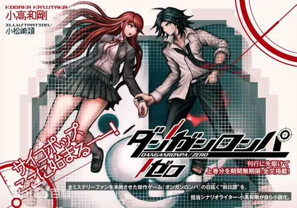

弹丸论破 Zero
ダンガンロンパ／ゼロ · 小高和刚 · 上卷 / 下卷
一个女孩子每周都会忘记自己是谁。她有本笔记，封面上写着「音无凉子的记忆笔记」。 研究所里那个爱看漫画、嘴上刻薄的年轻医生，是她的主治医师，也是她喜欢的人。 而在很远的地方，另一个女孩正在为这一切能顺利发生而高兴得直跺脚。
01作品档案
| 书名 | 弹丸论破 Dangan Ronpa／Zero（ダンガンロンパ／ゼロ） |
|---|---|
| 作者 | 小高和刚 |
| 原作 | 游戏《弹丸论破：希望的学园与绝望的高中生》（Spike） |
| 地位 | 系列前传，讲述「希望之峰学园史上最大最恶事件」前后的故事 |
| 结构 | 上卷四章、下卷六章，约十九万九千字。上下卷各有一段「校长的评论」 |
| 本馆藏 | 网络翻译版（译者署名：二里头@轻之国度），与文库本可能有细微差异 |
02写在绝望之前
这本书的开头不是谜题，是一个人开心到发疯。
江之岛盾子站在血水里跺脚。一切都照她的设想发生了，顺利得让她心里发慌—— 所以她高兴得喊「不够，绝望的绝望还不够」，直到她想起一张脸，突然安静下来， 然后开始跳舞。那张脸属于她接下来要逼进绝望的人。
镜头一转，变成第一人称：「我」在跑，一边跑一边把记忆写进笔记本， 因为「我」每周都会忘记。笔记本封面写着「音无凉子的记忆笔记」。 接住「我」的人叫松田夜助，这个研究所的负责人，脸很臭，嘴很毒，看漫画的时候不看人。
一条线在研究所里，安静的、有点好笑的日常；一条线在校外， 雾切响子这样的人在暗处翻查「最恶事件」。两条线越走越近， 近到最后你会发现，那个一直在问「我是谁」的女孩子，问的其实是整本书最大的问题。
03登场人物
- 音无凉子——第一人称。记忆障碍患者，靠一本笔记确认自己是谁。说话有点跳，怕小刀，喜欢松田君喜欢得不得了。
- 松田夜助——《超高校级神经学者》，神经科学研究所的负责人，凉子的主治医师与青梅竹马。嘴上喊她丑女，手上一直在做事。
- 江之岛盾子——《超高校级绝望》。这本书真正的作者，所有人的剧本都出自她手。
- 战刃骸——《超高校级军人》，盾子的姐姐。奉命变装成妹妹的样子，台词都是妹妹写好的。
- 雾切响子——侦探，学生。全书最冷静的一条线，一直在追「最恶事件」的真相。她的父亲是学园的校长。
- 村雨早春——《超高校级学生会长》。最恶事件中的幸存者，头部重伤，此后一直躺着。
- 斑井一式——追杀凉子的人。自称「不死之身」，被压过书架、扭过胳膊、击退过好几次，还站着。
- 苗木诚——第七十八期生，与战刃相识的那一段里出现。
- 黑白熊——在这个时间点还只是影子，但书里已经提了二十几次。
04章节与时间线
| 上卷 第一章 | 盾子在血水里跳舞；镜头交给研究所里的「我」。 |
|---|---|
| 上卷 第二章 | 「我」边跑边写笔记，被松田君接住；日常开始。 |
| 上卷 第三章 | 研究所里来了一位奇怪的女人；斑井一式登场。 |
| 上卷 第四章 | 雾切响子在走廊里停住脚步，听见钟声一样的东西。 |
| 下卷 第一章 | 视角继续推进，旧校舍与事件的全貌开始浮出。 |
| 下卷 第二章 | 「然后实际上——马上就忘记了」。那双通红的眼睛。 |
| 下卷 第三章 | 「我突然醒来了」——记忆与身份的界线变得模糊。 |
| 下卷 第四章 | 雾切响子踏入神经科学研究所，看见躺在床上的《她》。 |
| 下卷 第五章 | 潜入旧校舍，门半开着，灰尘很厚。 |
| 下卷 第六章 | 松田夜助的手从《她》的脖子上放开。刀落地，血汇成泊。 |
| 校长的评论 | 两卷各附一段「校长的评论」，作者借校长之口留下一句闲话。 |
时间线不用记太细。这本书真正的时间只有两段：盾子决定动手之前，和动手之后。 中间那些日常，是留给你在真相揭开时回想的。
05真相
⚠ 点开查看剧透：这本书的三层真相
第一层：谁在说话。「我」是音无凉子——一个记忆有障碍的女孩。她靠笔记活着， 每天醒来都要重新认识自己一次。这一层读者很快能接受，也因此放松了警惕。
第二层：谁在假装。书里出现的「江之岛盾子」，有很多时候是战刃骸扮的。 台词由盾子写好，姐姐照着念，连表情都演。战刃说得很委屈： 「和你见面时的江之岛盾子的模仿者，实际上都是我呢。」
第三层：音无凉子是谁。战刃变装成妹妹，是为了骗过「丧失了记忆的自己」—— 也就是说，那个在研究所里被叫作音无凉子的女孩，就是失忆的江之岛盾子本人。 松田那句「我一直都在努力不让你回想起来」，说的就是这件事。
至于松田为什么要隐瞒，盾子为什么要绕这么大一圈，书里给了一个很冷的答案： 她连「计划被破坏的绝望」都预先留了位置。松田到死都在问「是为了让我绝望吗」， 而她回他一句「你太自我意识过剩了」。
（结局的最后一刀，留给主人自己翻。）
06诡计解剖
⚠ 点开查看剧透：这本书用了哪几手
一、叙述性诡计。第一人称的「我」从头到尾没撒谎，可她的记忆是坏的。读者跟着她走，自然把「音无凉子」当成一个普通女孩，直到有人替她说出她是谁。
二、变装与双胞胎。盾子和战刃是姐妹。一个在明处演，一个在暗处看，中间还隔着「谁是谁」的误会。书里那句「再怎么说是姐妹你们也是两个人」，是给读者的提示。
三、用失忆代替伪装。常规写法是「藏起来」，这本书是「忘掉」。忘记比伪装更彻底——连自己都骗过去了。
四、不可靠的笔记。「记忆笔记」看似是她的救命绳，其实是作者递给读者的另一件道具：你以为她在记事实，她记的是她愿意相信的部分。
五、提前公布的结局。开头就把盾子的愉快写在前面，读者知道「有人要绝望」，却不知道那个人是谁——悬念从「会不会」换成「是谁」。
07名场面与评价
开场那场舞。血水、跺脚、「不够，绝望的绝望还不够」，然后是想起一张脸之后的安静。 这一段把盾子写透了：她要的不是赢，是看见东西碎掉的那一下。
松田君的毒舌。「是全日本丑女协会吗？不如说，这种协会的存在本身就是歧视性的。」 这本书的笑点大半在他身上，也正因为这样，最后那一刀才疼。
那句「音无凉子已经不在了」。陈述句，没有感叹号。整本书的重量都压在这一句上。
评价：作为前传，它把「最恶事件」从一个设定变成了一个具体的人做的具体的事。 推理成分不算重，真正厉害的是结构——你读到最后一页才明白，前面那些温柔都是布置好的。
08参考资料
- 小高和刚《弹丸论破 Dangan Ronpa／Zero》上卷、下卷（网络翻译版，译者二里头@轻之国度）。
- 游戏《弹丸论破：希望的学园与绝望的高中生》——本作的前作，Zero 里的人物与事件在那里有结局。
- 《弹丸论破2》《弹丸论破V3》——系列后续，Zero 埋下的设定在后续作品里被反复使用。
- 本页所有情节均取自主人提供的文本，未作虚构补充。